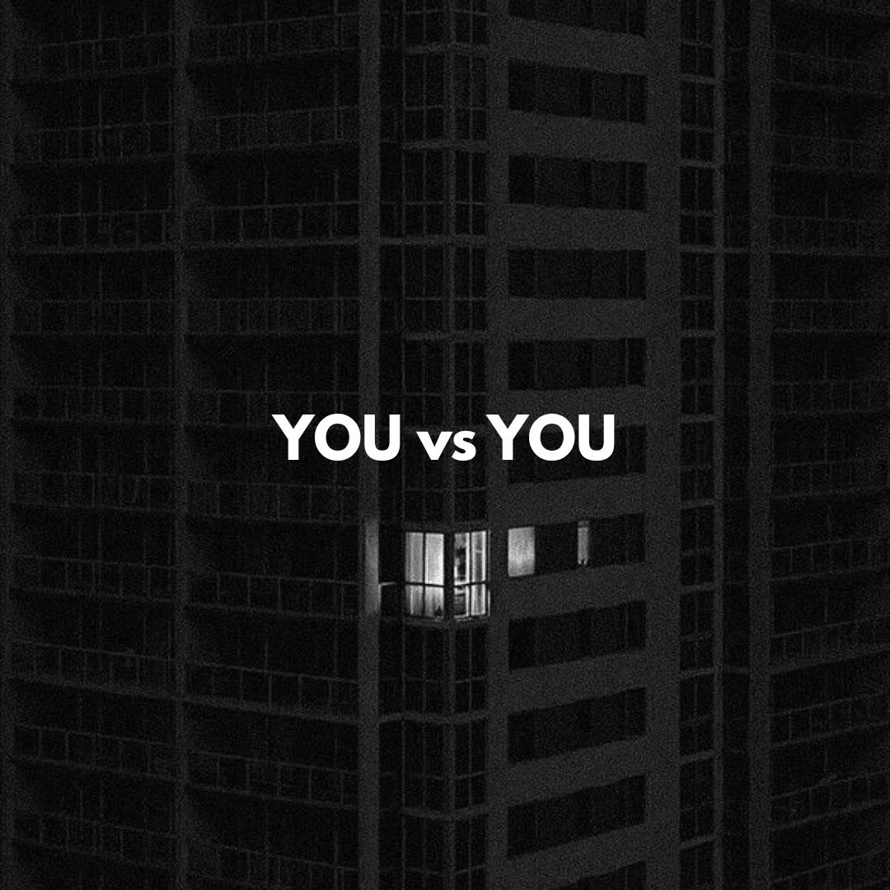

Essay · 2 min read
Losses Hit Harder Than Gains

The pain someone feels from losing a million dollars is about twice as strong as the joy someone feels from winning that same amount.
This emotional imbalance can be explained by the brain's evolutionary survival mechanism. In the past, loss — of food, energy, shelter — was a serious threat, a matter of life and death. That's why our brains are still far more sensitive to losses today.
Nobel laureate Daniel Kahneman demonstrated this idea.
The fear of loss is what pushes us into action. Sometimes a person wakes up early, studies, or works not out of hope for a reward, but simply to avoid losing something. Because the brain's core job is to protect us from danger.
That's why, when you set a goal, don't just ask "What will I gain?" Ask instead: "What will I lose if I don't do this?"
More often than not, the second question drives stronger action. For example, at work, a manager saying "you'll lose your bonus" motivates an employee more than saying "you'll get a bonus." This same principle works in marketing, in education, and even in parenting.
On the downside, this same mechanism holds us back from taking risks. Sometimes, just to avoid losing anything at all, we let an entire opportunity slip away. Growth, change, a new path — all of these carry some degree of risk of loss.
To make this loss-averse brain work in your favor, understand this mechanism and point it in the right direction. When the fear of loss shows up, ask yourself whether you're genuinely avoiding a serious risk, or avoiding an opportunity to grow. If you can catch that difference, the win is yours.